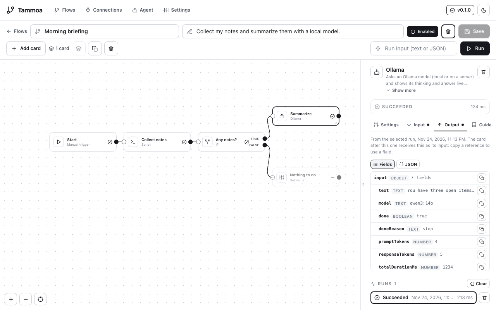
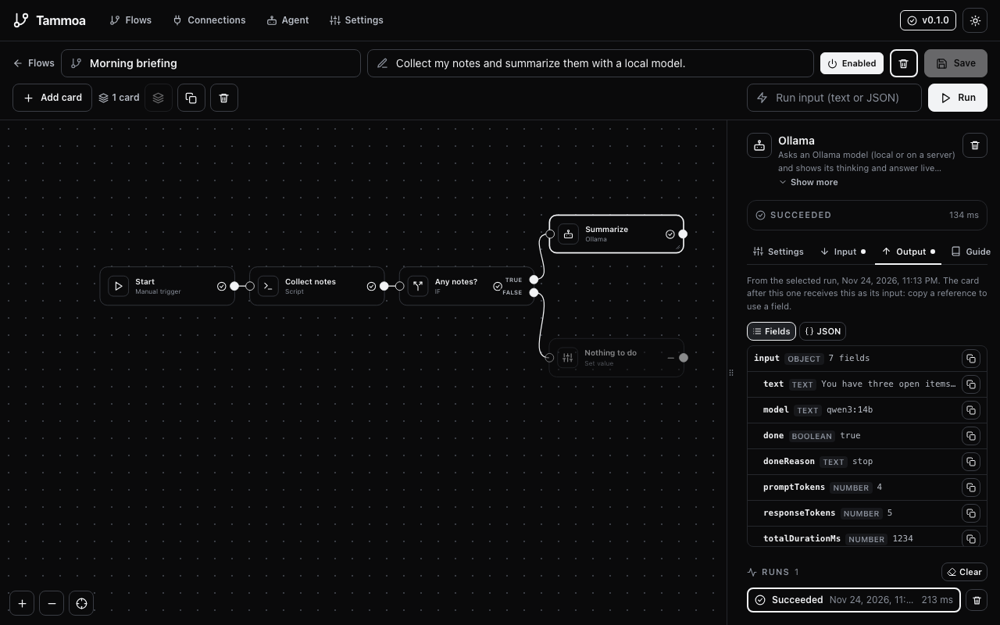
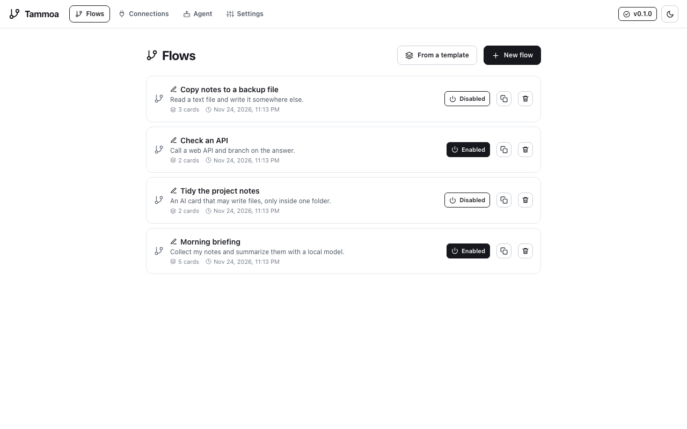
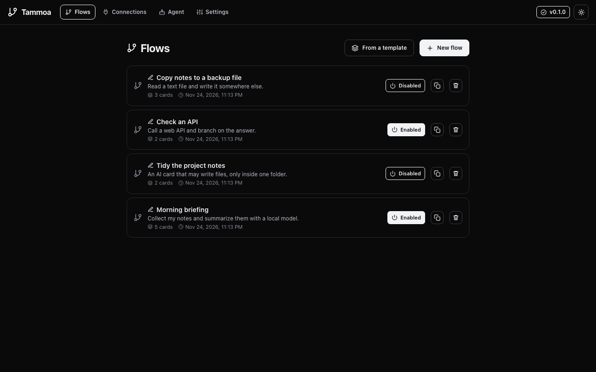
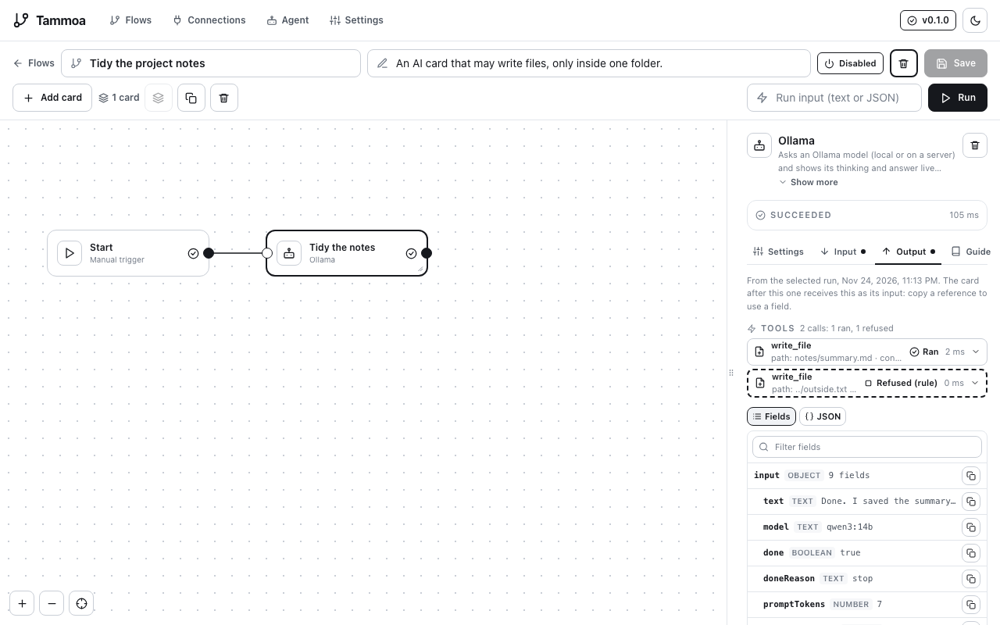
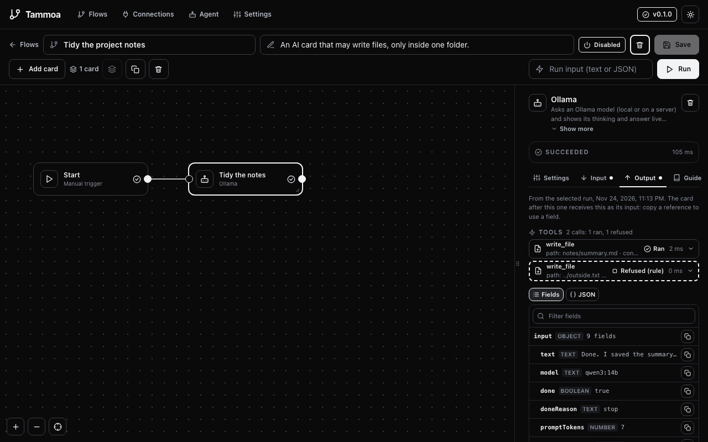
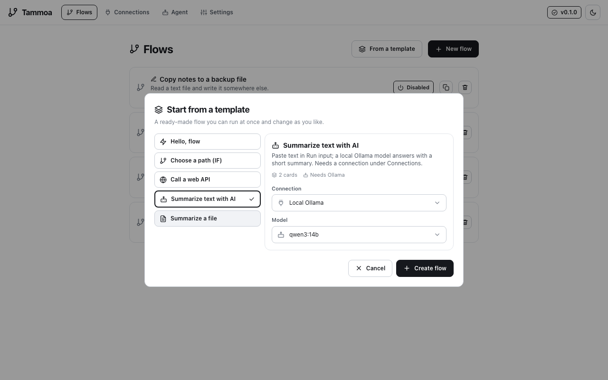
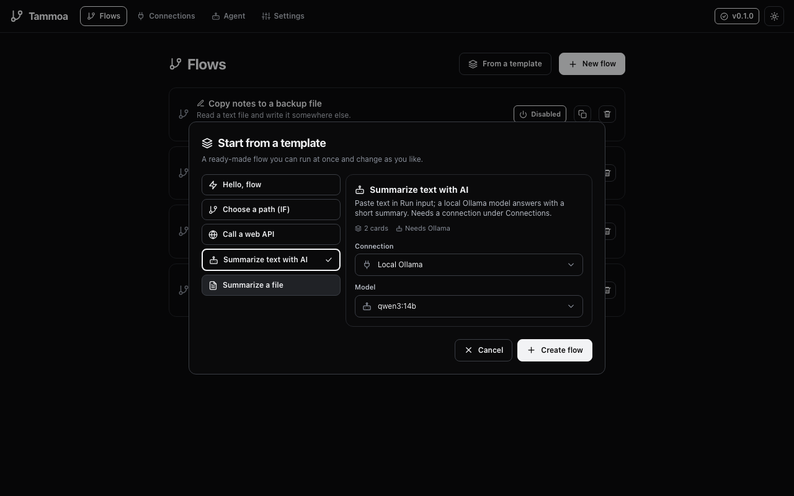
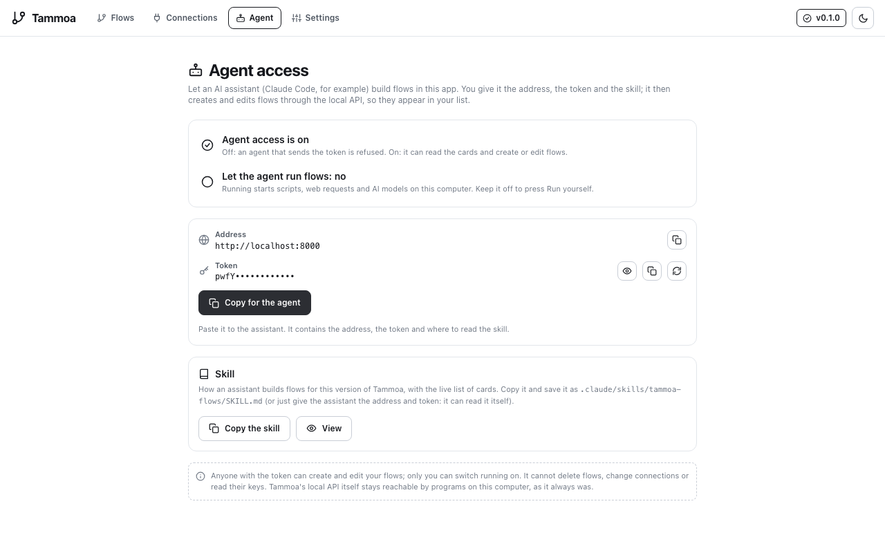
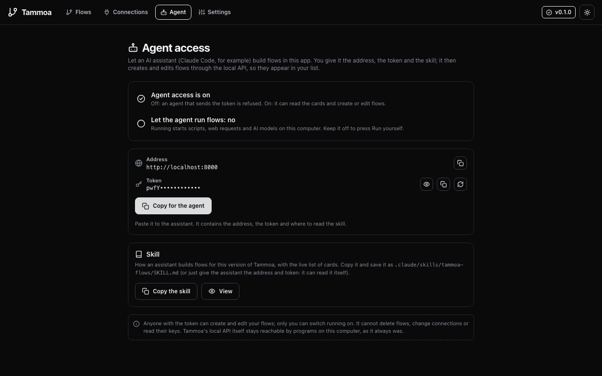

Build AI automations from cards
Wire scripts, web requests and local AI models into flows, press Run, and watch every card finish. Click any card to see exactly what it received and what it produced.
Free · macOS (Apple Silicon) and Windows


From idea to a running flow in minutes
Pick a card, or a template
Start from a ready-made flow (nothing to set up) or add cards yourself: a script, a web request, an IF, a file, an AI model.
Join them with lines
Drag from one card to the next. The output of a card becomes the input of the next, and a line can loop back to repeat work.
Press Run and watch
Cards light up as they finish. An AI card streams its answer live, and every card keeps what it got and what it made.
Everything runs on your machine
No account, no cloud. Your flows, connections and texts live in a folder on your computer.
Local AI with Ollama
Ask a model on your own computer (or a server you choose). Its thinking and answer stream live, and you can set how much it reads at once.
AI that acts, inside rules
Let a model read and write files, call web APIs or run scripts, only inside a folder and to hosts you allow. An optional second model approves each call. Every call is listed: ran, refused or failed.
Branches, loops and data
Split a flow with IF, repeat work in a loop, and keep reusable text in a Data card that every card can read by name.
See what every card got
The Input and Output tabs list each field with a button that copies the exact reference, so wiring cards together needs no guessing.
Templates and backup
Start from five ready flows. Back everything up in one click, and restore it on another computer. Restoring never overwrites, and keys are never in the file.
Let an AI assistant build flows
Switch on Agent access and an assistant such as Claude Code can create and edit flows for you through the local API. It cannot run anything unless you allow it.
A quick look around
Light and dark, the way the app looks on your screen.
Cards joined by lines. Click one to see its input, its output and how long it took.


All your flows in one place: duplicate, switch on, or start a new one from a template.


An AI that may write files, only inside its folder. The write outside it was refused by the rules, and both calls are listed.


Five ready-made flows. Pick one, choose your Ollama model, and run it.


Give an AI assistant the address and token, and it can build flows for you. Running stays your decision.
Get Tammoa
Free. Choose your system.
macOS
Download for macOSWindows
Download for WindowsGood to know
Do I need Ollama?
Only for the AI cards. Scripts, web requests, files, IF, loops and data cards work without it. For AI, install Ollama (ollama.com), download a model, for example ollama pull qwen3:14b, and add its address under Connections.
Where is my data?
In a folder on your computer (your user data folder, in a "Tammoa" folder). Nothing is sent to a server. The one outside call the app makes is the optional update check, which asks GitHub for the latest release.
Can an AI delete my files?
Only if you give an AI card the file tools, and then only inside the one folder you choose. Anything outside it is refused by the app itself, before any approver model is asked. The script tool is a best-effort guard, not a sandbox, so keep it off unless you need it.
Does it update itself?
Not yet. Settings has a "Check for updates" button that tells you when a newer version exists; you download and install it like the first time, and your flows stay as they are.
Is there a Linux or Intel Mac build?
Not in the downloads yet. The macOS download is for Apple Silicon.